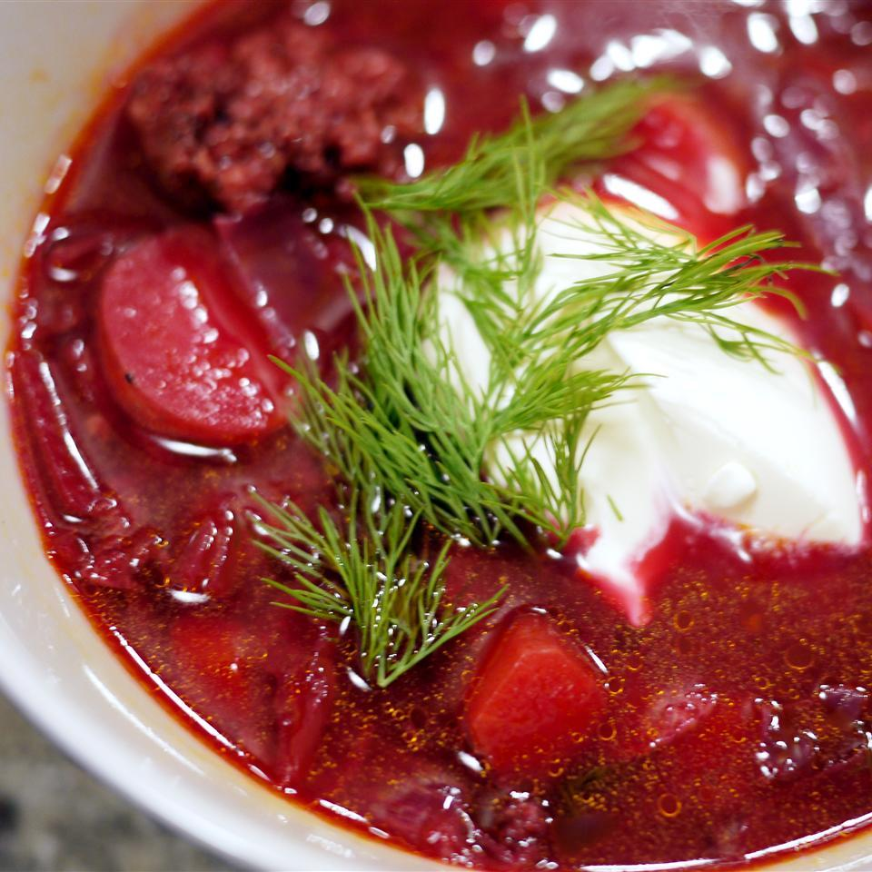

Homepage
Ukrainian Cuisine
Ukrainian Red Borscht Soup
I'm not going to say this chicken Kiev is 'easy to make.' It's really not. So, why try? Because, if and when you pull this off, you'll be enjoying one of the greatest chicken experiences of your life. It's also one of the greatest garlic experiences of your life, as well as one of the greatest butter experiences of your life.

- Servings: 10
- Yield:10 servings
- Prep: 25 mins
- Cook: 40 mins
- Total: 1 hr 5 mins
Ingredients
- 1 (16 ounce) package pork sausage
- 3 medium beets, peeled and shredded
- 3 carrots, peeled and shredded
- 3 medium baking potatoes, peeled and cubed
- 1 tablespoon vegetable oil
- 1 medium onion, chopped
- 1 (6 ounce) can tomato paste
- 3/4 cup water
- 1/2 medium head cabbage, cored and shredded
- 1 (8 ounce) can diced tomatoes, drained
- 3 cloves garlic, minced
- salt and pepper to taste
- 1 teaspoon white sugar, or to taste
- 1/2 cup sour cream, for topping
- 1 tablespoon chopped fresh parsley for garnish
Directions
- Crumble the sausage (if using) into a skillet over medium-high heat. Cook and stir until no longer pink. Remove from the heat and set aside.
- Fill a large pot halfway with water(about 2 quarts), and bring to a boil. Add the sausage, and cover the pot. Return to a boil. Add the beets, and cook until they have lost their color. Add the carrots and potatoes, and cook until tender, about 15 minutes. Add the cabbage, and the can of diced tomatoes.
- Heat the oil in a skillet over medium heat. Add the onion, and cook until tender. Stir in the tomato paste and water until well blended. Transfer to the pot. Add the raw garlic to the soup, cover and turn off the heat. Let stand for 5 minutes. Taste, and season with salt, pepper and sugar.
- Ladle into serving bowls, and garnish with sour cream, if desired, and fresh parsley.
Nutrition Facts
Calories: 257
- Protein 10.1g;
- Carbs 24.4g;
- Fat 13.8g;
Check also this:
Kyiv Chicken